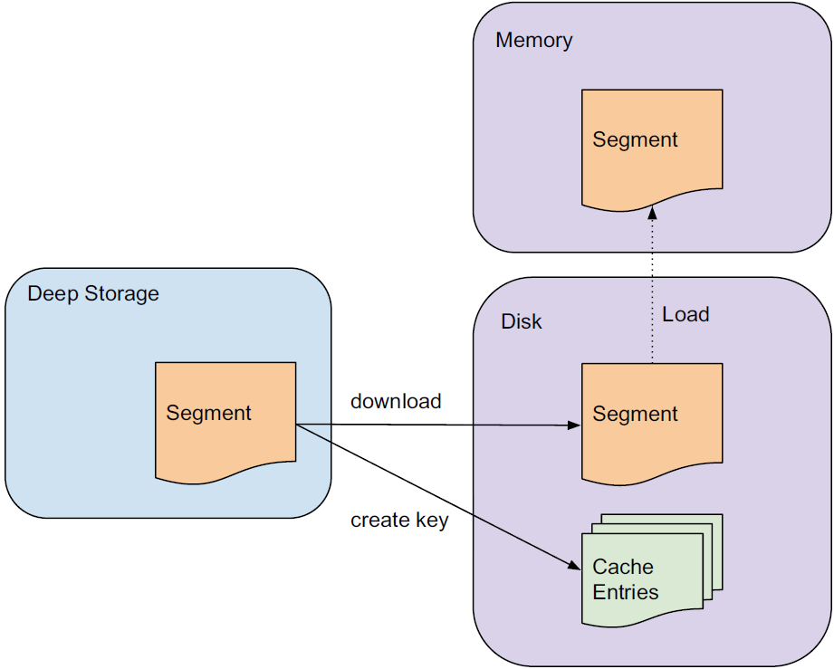

Druid 기본 클러스터 아키텍쳐¶
Druid 클러스터는 여러 유형의 노드군으로 구성되며, 각 유형의 노드군별로 고유의 역할을 수행합니다.

Real-time 노드¶
real-time 노드군은 이벤트 스트림을 ingestion하고 쿼리하는 기능을 합니다. 이 노드들은 최근 발생한 짧은 시간 범위 내 이벤트들만을 처리하며, 주기적으로 이들을 딥 스토리지로 넘기는데, 그 절차는 다음과 같습니다.

Source: Druid: A Real-time Analytical Data Store¶
유입되는 이벤트들은 메모리에 인덱싱되면서 즉시 쿼리에 사용될 수 있습니다.
메모리 상의 데이터는 정기적으로 디스크에 저장되면서 수정 불가능한(읽기 전용) 컬럼형 포맷으로 변환됩니다.
저장된 데이터는 off-heap 메모리로 로드되기 때문에 쿼리 가능한 상태가 유지됩니다.
디스크에 저장된 인덱스들을 주기적으로 병합되어 데이터 '세그먼트'를 구성한 후 딥 스토리지로 이관됩니다.
이런 식으로 real-time 노드로 ingestion된 모든 이벤트는 디스크 저장 전후를 막론하고 on-heap 또는 off-heap 메모리 상에 존재하므로 쿼리가 가능한 상태를 유지합니다(쿼리는 메모리 상의 인덱스와 디스크에 저장된 인덱스 모두에 전달됩니다). 이러한 real-time 노드 기능을 통해 Druid는 실시간 데이터 ingestion을 수행할 수 있습니다. 즉, 이벤트들이 발생하면 곧 이어서 쿼리 대상이 됩니다. 그리고 이러한 과정에서 데이터 손실이 발생하지 않습니다.
real-time 노드는 Druid 클러스터 내 다른 노드들과의 유기적인 동작을 위해 자신의 온라인 상태와 처리 중인 데이터를 Zookeeper(외부 종속 모듈 참조)에 보고합니다.
Historical 노드¶
historical 노드군은 real-time 노드가 생성한 읽기 전용 데이터 블록(세그먼트)을 로드하고 처리하는 기능을 합니다. 이 노드들은 딥 스토리지에서 읽기 전용 세그먼트를 다운로드하고 이에 대한 쿼리를 처리합니다(예: 데이터 집계/필터링). 이 노드들은 shared-nothing 아키텍쳐에 기반하며 동작이 단순합니다. 이들 간에는 경합이 발생하지 않으며 단순히 Zookeeper의 지시에 따라 세그먼트를 로드, 드롭, 처리할 뿐입니다.
historical 노드가 쿼리를 처리하는 프로세스는 다음과 같습니다.
Source: Druid: A Real-time Analytical Data Store¶
쿼리를 받으면 historical 노드는 우선 자신에게 이미 어떤 세그먼트가 존재하는지에 관한 정보를 보관하는 로컬 캐시를 확인합니다. 어떤 세그먼트에 관한 정보가 캐시에 없으면 노드는 딥 스토리지에서 해당 세그먼트를 다운로드합니다. 그런 다음, 해당 세그먼트는 Zookeeper에서 선언되어 쿼리가 가능한 대상이 되며, 노드는 이 세그먼트에 대해 요청된 쿼리를 수행합니다.
historical 노드는 읽기 전용 데이터만을 다루므로 read consistency를 보장할 수 있습니다. 읽기 전용 데이터 블록들은 또한 단순한 병렬 모델을 가능케 합니다. 즉, historical 노드들은 읽기 전용 데이터 블록들을 서로 간섭하지 않고 동시에 스캔·집계할 수 있습니다.
real-time 노드와 마찬가지로 historical 노드들도 자신들의 온라인 상태와 처리 중인 데이터를 Zookeeper에 보고합니다.
Broker 노드¶
broker 노드군은 Zookeeper에 보고된 메타데이터를 통해 어떤 세그먼트들이 쿼리 가능한지와 이 세그먼트들이 각각 어디에 저장되어 있는지를 파악합니다. broker 노드들은 입력된 쿼리들의 경로를 지정함으로써 각 쿼리가 올바른 historical 또는 real-time 노드에 도달되게끔 합니다. 그런 다음 historical 및 real-time 노드 각각에서 산출된 결과들을 취합하여 최종 쿼리 결과를 호출자에게 반환합니다.
broker 노드는 리소스 효율성을 높이기 위해 다음과 같이 캐시를 사용합니다.

Source: Druid: A Real-time Analytical Data Store¶
어떤 쿼리가 여러 세그먼트를 포괄할 경우 broker 노드는 캐시에 이미 존재하는 세그먼트들을 우선 확인합니다. 그리고 캐시에 없는 세그먼트들에 대해서는 그것이 보관된 historical 및 real-time 노드로 쿼리를 전달합니다. historical 노드들이 결과를 반환하면, broker 노드는 이 결과를 나중에 사용할 수 있도록 세그먼트별로 캐시에 저장합니다. real-time 노드의 데이터는 캐시에 저장되지 않으며, 따라서 real-time 데이터에 대한 요청은 항상 real-time 노드로 전달됩니다. real-time 노드의 데이터는 가변적이기 때문에 그 결과를 캐시에 저장하는 것은 안정적이지 않기 때문입니다.
Coordinator 노드¶
coordinator 노드군은 주로 historical 노드 데이터의 관리 및 분산을 담당합니다. coordinator 노드는 어떤 historical 노드가 어떤 세그먼트에 대해 쿼리를 수행할지 결정하고 이들에게 새 데이터를 로드하고, 기한이 지난 데이터를 드롭하고, 데이터를 복제하고, 데이터를 이동하여 부하 밸런스를 맞추도록 지시합니다. 이렇게 함으로써 분산형 historical 노드 그룹에서 빠르고 효율적이며 안정으로 데이터를 처리할 수 있습니다.
다른 모든 Druid 노드와 마찬가지로, coordinator 노드들도 Zookeeper 연결을 유지함으로써 클러스터의 현황을 파악합니다. coordinator 노드들은 MySQL 데이터베이스와의 연결도 유지하는데, 이 데이터베이스에서는 클러스터 내 세그먼트의 생성, 소멸, 복제 규칙과 같은 추가적인 연산 매개변수 및 구성 정보를 관리합니다.
Druid 클러스터의 안정성을 위해 coordinator 노드는 이중화되며 일반적으로 하나의 coordinator 노드만 활성 상태를 유지합니다.
외부 종속 모듈¶
Druid는 클러스터 동작을 위해 몇 가지 외부 종속 모듈을 사용합니다.
Zookeeper: Druid는 Zookeeper를 통해 클러스터 내부 통신을 합니다.
메타데이터 스토리지: Druid는 메타데이터 스토리지를 통해 데이터 세그먼트 및 구성에 관한 메타데이터를 저장합니다. 메타데이터 스토리지로는 주로 MySQL과 PostgreSQL이 사용됩니다.
딥 스토리지: Druid 세그먼트들을 영구적으로 백업 저장하는 공간입니다. Druid에 ingestion되는 데이터는 세그먼트 형태로 딥 스토리지에 업로드되고, historical 노드들이 필요한 세그먼트를 여기서 다운로드합니다. 딥 스토리지로는 주로 S3 및 HDFS가 사용됩니다.
High Availability 특성¶
Druid는 어느 한 노드가 고장난다고 해서 클러스터의 동작이 중단되지 않도록 설계되었습니다. 또한 서로 다른 유형의 노드군끼리도 상호 간에 상당히 독립적이기 때문에, 클러스터 내부에 통신 장애가 생겨도 데이터 가용성에는 최소한의 영향만을 미칩니다. Druid 클러스터에서 highly availability를 확보하려면, 노드군별로 2개 이상의 노드가 구성되어야 합니다.